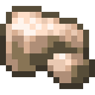

-Coal is used to smelt ores into craftable ingots
-It is also the most common ore in the game
-It's impossible to utilize any other ores without coal
-Iron is the second most common ore in the game
-It's one tier below diamond in terms of strength
-Iron ore can only be mined by stone tools

-Diamond is the second strongest ore in the game. Below Netherite
-Diamond can only be mined by iron
-Diamond is required to make an enchantment table

-Netherite is currently the strongest and rarest ore in the game, it is only found in the nether dimension
-Netherite can only be mined by Diamond tools
-Netherite tools and armor are currently the strongest in the game